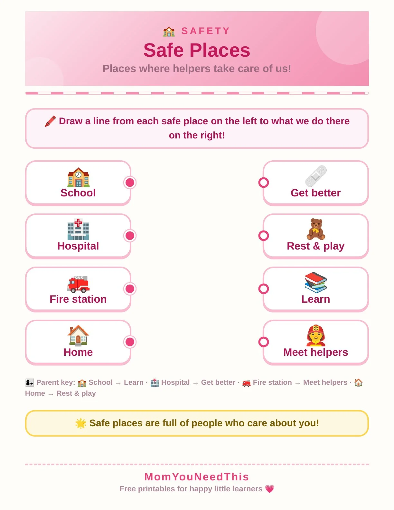

🚪 Community Safety Safe & Smart In Our Neighborhood
Quick Answer
This free printable community safety activity helps toddlers and preschoolers (ages 2–5) learn their neighborhood as a safety map: the helpers who work in it, the safe places in it (fire station, library, a store's front desk), and the plan for the moment every parent rehearses in their head — what to do if you get separated. Download and print at home with no signup needed.
Our community is full of helpers and safe places. These activities teach little ones who to trust, where to go for help, and how to stay safe when out and about.
Community safety is geography with a purpose. A child who knows their own street — which building is the fire station, which shopkeeper knows their name, where the family meeting spot is — carries a map that works when a parent's hand is not available. These pages turn your actual neighborhood into the textbook.
🚪 Explore Community Safety
Meet community helpers, learn safe places, and practice what to do if you need help.
💡 How To Use This Activity
Print the pages and connect every helper and safe place to your own neighbourhood: which fire station do we pass, where would we go if we got separated? Afterwards, walk one familiar route together and let your child point out the safe spots they remember from the sheets. The print button opens the full-size page in a new tab if you prefer to print from there.

🖨️ Download Your Free Community Safety Printable
Meet community helpers, learn safe places, and practice what to do if you need help. Print it out, grab the crayons, and you're ready — no signup needed.
⬇️ Download Free Printable 🖨️ Print🎁 Free printable for toddlers & preschoolers
🏠 If You Ever Need Help — The Three-Step Plan
Step 1: Stop and stay. The hardest and most important rule: a child who realizes they are separated should stop moving. Searching parents search outward from where the child was last seen; a child who keeps walking becomes a moving target. “Stay where you are — we will come back to this spot” is a promise the whole family makes and keeps.
Step 2: Find a helper. In order of likelihood: a parent with children of their own, a person in a uniform, someone behind a counter with a name tag. The sentence is the one rehearsed on the safety helpers pages: “I'm lost. My name is… Please help me.” Shy children can practice it to a stuffed animal until it runs by itself.
Step 3: Know your facts. By preschool, a child can hold three facts: their full name, a parent's full name (grown-ups have first names — “Mom” is not searchable), and one phone number, sung to a tune if that is what makes it stick. An address comes next. These facts are the child's ID card, carried in the one place that cannot be lost or left in a coat pocket.
Walk the plan, do not just say it: on your next ordinary outing, let your child point out the safe places and name the helpers as you pass them. The neighborhood becomes familiar territory — and a familiar neighborhood is itself a safety device.
❓ Community Safety FAQs
What activities are included in Community Safety?
This page collects our free community safety printables in one place: meeting community helpers, learning the safe places in your neighborhood, and practicing what to do if you need help — stop and stay, find a helper, know your facts. Download the printable below and start learning right away.
Are these activities really free?
Yes — every printable on MomYouNeedThis is 100% free to download and print. No signup, no payment, just tap the download button. Print the plan page for the fridge: the three steps belong where the whole family can see them. Print the plan page for the fridge: the three steps belong where the whole family can see them.
How do I use these activities with my child?
Print the pages and connect every helper and safe place to your own neighborhood: which fire station do we pass, where would we go if we got separated? Afterwards, walk one familiar route together and let your child lead the spotting — helpers, safe places, the family meeting spot. Local knowledge is the lesson; the printables are just its rehearsal script.